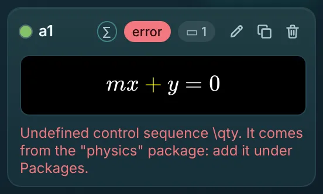
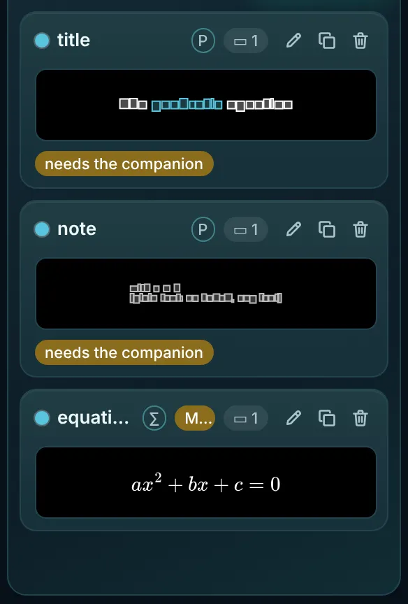
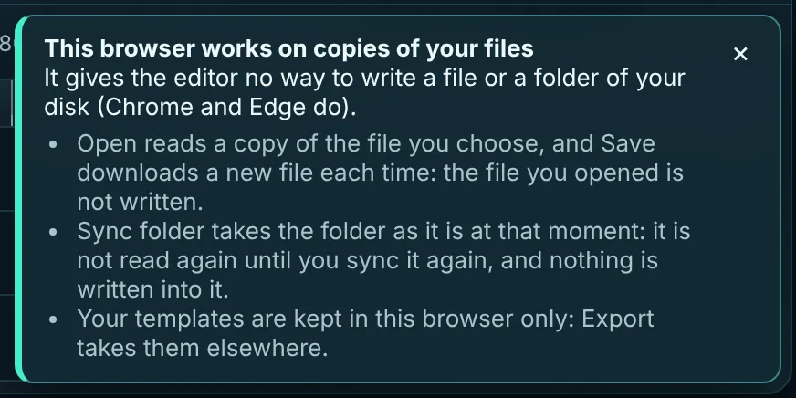

Troubleshooting and questions
What to do when the editor does not do what you expect. Each problem says what you see, why it happens and what to do, with the app’s own words in quotation marks so you can find the message you have.
Problems
A formula shows an error
You see. A red message on the formula’s card in the Creator, and in its editor, and the badge of the card says error.

\qty without the physics package. The drawing is the last
one that rendered; the badge and the message say that the new source did not.Why. The renderer could not typeset the source. The editor puts the renderer’s message in plain words. The ones you will meet:
- “Undefined control sequence \qty.” The command is not known. When it belongs to a package the formula does not load, the message goes on: “It comes from the "physics" package: add it under Packages.”
- “\begin{…} is never closed: add \end{…}.” and “\end{…} has no matching \begin{…}.”
- “^ at the end needs an argument, as in x^{2}.”, “Missing close brace.” and “\left needs a matching \right (\right. closes it without a delimiter).”
- “Something is not closed: a ^ or _ without its argument, a { without its }, or a \left without its
\right.” when the renderer only noticed at the end. Both renderers typeset your source inside an
align*, as Manim does, which is why their own messages can name it. - In a formula of several lines, the message ends with (line N).
What to do. Fix the source in the formula editor and apply it with Ctrl+Enter; the card updates when the render finishes. To add a package, use the Packages section of the editor. A package that MathJax cannot load is marked in that list, “MathJax cannot load "…": the preview ignores it. Exact mode (companion) compiles it with LaTeX.” The browser’s preview then ignores the package, and only the companion’s LaTeX shows the real result. See Writing formulas.
Pairs and colours moved when the renderer changed
You see. After you start the companion, or change the glyph source in the View menu, or edit a formula’s source, a card of the Creator shows “⚠ Check glyph colours, pairs and blocks”, and a colour or a pair seems to be on another glyph.
Why. MathJax and LaTeX draw the same formula as the same shapes in a different order: MathJax
gives \frac{a}{b} as the a, the b, then the bar, and \sqrt{c} as the
c, then the root. A project names glyphs by number, by their canonical
index, so when a different render arrives the editor carries every reference over by matching glyphs. When it is not sure, or something no longer has a glyph to stand on, it
says so with that warning; its tooltip lists what was dropped (colours, hidden glyphs, pairs, glyphs of blocks).
What to do. Point at the warning to read what changed, then look at the pairs in the relation editor and the colours in the formula’s editor, and Ctrl+Z an edit that went wrong: undoing a source edit gives back its glyph list. If you will export Python with exact glyph numbers, decide on the renderer first and build your pairs with the companion running; without it the exported scene finds the glyphs of a MathJax formula by position, with a helper at its top, which works but is not exact (The generated Python).
Dots missing, or left behind, in the Manim video
You see. In the video Manim renders from the exported Python, a formula has one dot of three where it
has \cdots, or pieces of a formula stay where it was when its glyphs move to the next one. The scene printed
“Warning: Manim made N glyphs of a formula the editor split into M; unmatched glyphs are not animated.” when it
ran.
Why. The formula was drawn by MathJax, with no companion running, and MathJax split it into another
number of glyphs than LaTeX does: \cdots and the other dots, tall bars, \neq and a few more. The
scene finds Manim’s glyphs by position, and the ones it cannot reach are left out of every animation of glyphs.
What to do. Start the companion, let the formulas render with LaTeX (the badge says Renderer: LaTeX), and export again. Without the companion has the whole list and what the video shows.
The badge says MathJax and the companion is running
You see. Renderer: MathJax in the menu bar. Its tooltip says “No companion at http://127.0.0.1:7799. Start it for exact LaTeX rendering: python3 companion/mfe_companion.py serve”.
Why, and what to do. The editor looks for the companion at that address every five seconds while it is missing, and again whenever the window gets the focus. Check, in this order:
- Is it running? The command is the one in the tooltip. Run
python3 companion/mfe_companion.py healthtoo: it says what the machine gives the companion and how to get the rest. - Did you open the app from disk? A page opened as a file is refused unless the companion starts with
--allow-file-origin; the tooltip then shows the command with it. Or let the companion serve the built app,serve --app app/dist, and openhttp://127.0.0.1:7799/app/. - Is the page on
localhostor127.0.0.1? The companion accepts no other origin. - On Windows, the command is
python. Where no Python is installed, Windows answers that name with the alias of the Microsoft Store, which runs nothing: usepyor the full path of an interpreter.
Then click the window once to make the editor look again. The companion has the options.
The companion runs but formulas still use MathJax
You see. The tooltip of the badge says “LaTeX is not installed where the companion runs: formulas use MathJax.” With View ▸ Glyph source: LaTeX (companion) a formula shows the error “The companion cannot run LaTeX: latex or dvisvgm is not installed where it runs.”
What to do. The companion needs latex and dvisvgm on its PATH: TeX Live, or
MiKTeX on Windows. health prints the install command for your system.
A font text is drawn as boxes
You see. Boxes where a font text should be, and a badge needs the companion on its card. The tooltip of Renderer counts them: “1 font text as placeholder boxes (needs the companion)”.

Why. A font text is shaped by Pango through the companion, and only on Linux; the companion must also
know a Manim interpreter for the project’s target (--ce-python, --gl-python). It starts
its text worker the first time a text needs it, which takes a few seconds. A text whose shape is saved in the
project file draws from that shape with no companion at all, which is how an example text opens.
What to do. On Linux, start the companion with the interpreter of your Manim, for example
--ce-python path/to/venv/bin/python. On Windows and macOS font text stays as placeholder boxes, and
the Python you export still works: a font text is written as Text(…) with its font, from its
saved shape, or from its boxes when nothing has shaped it. See
LaTeX texts and font texts.
Open and Save work on copies
You see. When the editor starts, a notice that stays until you close it: “This browser works on copies of your files.”

Why. Only Chrome and Edge let a page write a file or a folder on your disk. Firefox and Safari do not, so the editor works on copies there: the menus look the same, and nothing else tells that Save does not write the file you opened.
What to do. For full file access use Chrome or Edge. Elsewhere, Save downloads a file
each time, and your browser may number it (scene (1).mfe.json): keep the last one and open it again
with File ▸ Open… and its Other file… button. Sync folder reads the folder once, and nothing is written into
it. Your templates stay in the browser; Export all in the template library takes them out.
See Projects and files.
The video will not export
You see. In Export ▸ Video… an encoder is dimmed, with the reason under it:
- “This browser cannot encode video (WebCodecs is missing). Use Chrome or Edge, or the companion.” The Browser encoder needs WebCodecs. A format can also be dimmed with “(not supported by this browser at this size)”, and then “This browser cannot encode any format at this size. Try a smaller size, or use the companion.”
- “The companion is not running. Start it: …” and “ffmpeg is not installed on the companion’s machine (or not on PATH).” for Companion · ffmpeg.
- “Rendering with Manim is off. Restart the companion with --allow-manim-render (it runs the Python code the app sends).” and “No Manim interpreter is configured. Start the companion with --ce-python and/or --gl-python.” for Render with Manim.
The export stops and names a size or a disk. With Companion · ffmpeg, a video over the companion’s limit (4 GiB unless it was started with another) fails with “The video is larger than 4 GiB, the most this companion writes for one video, so it was stopped…”, and nothing is saved: a video is never delivered cut short. The companion also stops an export, of ffmpeg or of Manim, when less than 1 GiB is left free on the disk of its temporary folder: “The disk of the companion’s temporary folder (…) is nearly full…”. How large a video can be tells how to raise the limit and how to write the videos on another disk.
The sound of an MP4 does not play. Chrome on Linux has no AAC encoder, so an MP4 encoded in the browser carries Opus sound, and the dialog says so before you export. VLC and many players play it; some players and video editors do not. With a companion whose ffmpeg encodes AAC, a button under that warning switches to Companion · ffmpeg with MP4 in one click, which writes AAC.
Specks behind moving objects. Chrome’s own H.264 encoder can leave a few pixels of a moving object behind it for up to two seconds, until the next keyframe. For an MP4 without them choose Companion · ffmpeg, which encodes H.264 with x264; without a companion, WebM · VP9 leaves far fewer. Exporting video has the rest.
A hidden track is still in the export
You see. A track you hid with the eye appears in the exported Python or video.
Why. Hiding a track only takes it out of the Preview. The export dialog warns: “Track "Notes" is hidden in the preview but is exported like the others.” To keep something out of the scene, delete its clips. Or give the project a Fixed duration in File ▸ Project settings… and move them to start after its end: with the default duration, Until the last clip ends, the scene simply grows to take them in. See The timeline.
A clip will not move or be selected
Why. There are three locks, and each leaves a mark:
- The track is locked. The padlock on its header is on. A clip on a locked track cannot be edited: its menu has what would change it greyed out; when you try to relate it, the Animations panel says “Track “Title” is locked: unlock it on the timeline to create, edit or delete relations of its clips.”
- The clip is locked in the Preview. A small mark, a pointer struck out, shows on the clip. The Preview draws it faded and a click goes through it to what is under it, but the timeline and the panels still edit it. Press the mark, or choose Unlock in the preview in its menu.
- The clip is locked after its first transformation. A padlock shows next to its name. In the Preview the clip’s end state does not change by accident: you edit a transformation through the end icon of its block. Unlocking, with a warning, brings back editing at the playhead.
See Placing things in the Preview.
A menu entry is dimmed
You see. An entry in grey that does nothing when you choose it.
Why. Nothing can use it yet. Undo and Redo wait for something to take back or bring back. Copy properties needs exactly one clip selected, and Paste properties a copy and a clip to paste it on. The entries of Align need clips selected in the Preview (all but By symbol…), and those of Distribute three or more. Apply palette… needs an active palette, and Delete formula a formula selected in the Creator. In the right-click menus, rest the pointer on a dimmed entry: its tooltip says why, for example that a formula with only one clip has nothing to unlink from.
What to do. Select what the entry acts on, then open the menu again. Every menu says what each entry needs.
Recovering your work
The editor keeps a safety copy, an autosave, of the project of each browser tab as it changes. It is not your file: File ▸ Save still writes that.
- You reloaded the tab, or it crashed. The tab brings its work back when it opens again, and the menu bar says “Recovered, not saved”: the work is in the autosave and in no file yet, so save it.
- You closed a tab by mistake. A tab you open next takes over the work of a tab that is gone (a crashed one after a minute). The work of other closed tabs stays listed under File ▸ Recover autosave for a week, up to five of them.
- The browser restarted after closing unexpectedly. Each tab gets its work back within a minute. A tab you have not used yet gets it by itself, with the notice “Restored from the autosave”; a tab you have started to use gets the notice “Work from this tab's last session is available”, with a Recover button.
- “Could not restore the autosaved project”. The notice has a Download it button that keeps a copy of the autosave as a file. The browser keeps a copy too, set apart so that new work never writes over it: one for each autosave that could not be read, the five most recent.
- “No autosave in this browser”. The browser does not let the app keep one: its storage is blocked or full. Save to a file to keep your work.
Use one tab at a time
The editor is made for one browser tab at a time. A second tab starts a project of its own, so if you open one by mistake and see an empty project, your work is still in the first. Each tab keeps its own autosave, and two tabs never overwrite each other’s. What the browser shares between tabs is its storage of palettes, templates and favourites, so a change in one tab shows in the other, and a palette removed in one is gone in the other. A file saved from two tabs holds what the last save wrote: close the tab you do not work in.
A file will not open
You see. A notice, “Could not open scene.mfe.json”, with one of these messages:
- “The file is not valid JSON.” It is not JSON at all, or it was cut short.
- “This is not a Manim Formula Editor project.” It is a JSON file of something else.
- “The project was saved by a newer version of the app (format N; this app reads up to M).” Open it with a newer build of the editor.
- “The project file is malformed.” followed by the first paths that failed. Something in the file is out of range or of the wrong type.
A package (.mfe) whose project does not open, one saved by a newer editor say, gives that project’s reason
under its own name, “Could not open lecture.mfe”. A package is called damaged only when the package itself is.
A file that opens can still say “Opened with N issues”: a project with warnings or errors, such as a glyph that no longer exists. The notice lists the first eight. It is red, and stays until you close it, when one of them is an error: the preview and the export may then not represent the project faithfully. With warnings alone it is amber. A file of an older format opens, and the editor says “Upgraded from format N”; Project files shows both notices.
Things take a moment
- A new formula takes a moment to appear with the companion: real LaTeX compiles it (up to 20 seconds before the editor gives up). The result is cached, in memory and on disk, so the same formula comes back at once next time. MathJax is in the browser and draws at once.
- The first font text takes a few seconds. The companion starts its text worker the first time a font text needs it, and the text looks like boxes until the worker is ready.
- A video takes long. It is one image for every frame of the scene. A smaller size or a lower frame rate in the dialog makes it faster; the dialog says about how large the file will be before you start.
Questions
Does the editor need the internet?
No. The built editor is a page that runs in your browser from files and needs no server. It makes no request to the network
but one: to the optional companion on your own computer, at 127.0.0.1. Chroma Lab, the colour studio, comes inside it and
works offline too.
Which browser should I use?
Chrome or Edge. They can write your files and folders in place, and they encode video in the page. Firefox and Safari work, on copies of your files (above), and may not encode every video format.
Do I need Manim installed?
Only to run the Python the editor exports, or to have the companion render with it. Writing, animating, previewing and exporting Python need nothing but the browser. The Python you export runs with ManimCE or ManimGL; see ManimCE and ManimGL.
Why does my exported Python import SciPy?
Because a MathJax formula’s glyphs are found by position when the scene runs, and a small helper at the top of the file does that with SciPy, which both Manim installs have. Formulas drawn by the companion’s LaTeX use exact glyph numbers and need no helper. The generated Python explains it.
Can I use a narrow window?
Yes. Below about 760 px wide the four panels stack, each as tall as most of the window, and they scroll down under the menu bar, which stays at the top, never sideways. Under forced colours (Windows high contrast) every state keeps a ring, a border or an underline. A tour of the interface shows both.
How do I report a problem?
Write to the project on GitHub. Say what you did, what you saw, and what Help ▸ About says: it gives the version of the editor, of the project format, of MathJax and of the companion.